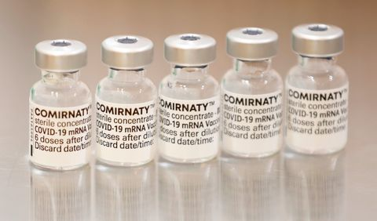

CIENCIA
Vacuna de Pfizer es altamente efectiva contra COVID-19 grave durante al menos seis meses
El esquema completo de las vacunas de Pfizer-BioNTech es efectiva en un 90% contra los casos de hospitalización producidos por todas las variantes de la COVID-19, incluido las más preocupantes como la Delta. Un nuevo estudio muestra que recibir las dos dosis de la vacuna contra la COVID-19 de Pfizer-BioNTech(BNT162b2) genera una alta efectividad contra el coronavirus en su forma más grave y es 90% efectiva contra las hospitalizaciones para todas las variantes, incluida la Delta, durante al menos seis meses. El informe, publicado en The Lancet y llevado a cabo por la farmacéutica y la organización sin ánimo de lucro Kaiser Permanente, señala también que la eficacia contra todas las infecciones por SARS-CoV-2 disminuyó durante el periodo de estudio, pasando del 88% en un mes después de recibir dos dosis de la vacuna, al 47% luego de seis meses. Sin embargo, la efectividad contra las hospitalizaciones se mantuvo en el 90% para todas las variantes. Estos hallazgos coinciden con los informes preliminares de los Centros para el Control y la Prevención de Enfermedades (CDC) de EE. UU. y el Ministerio de Salud de Israel. Los investigadores dicen que este estudio subraya la importancia de mejorar las tasas de vacunación contra COVID-19 en todo el mundo y monitorea la efectividad de la vacuna para determinar qué poblaciones deben tener prioridad para recibir vacunas de refuerzo. Estos hallazgos coinciden con los informes preliminares de los Centros para el Control y la Prevención de Enfermedades (CDC) de EE. UU. y el Ministerio de Salud de Israel. Los investigadores dicen que este estudio subraya la importancia de mejorar las tasas de vacunación contra COVID-19 en todo el mundo y monitorea la efectividad de la vacuna para determinar qué poblaciones deben tener prioridad para recibir vacunas de refuerzo . “Nuestro estudio confirma que las vacunas son una herramienta fundamental para controlar la pandemia y siguen siendo muy eficaces en la prevención de enfermedades graves y hospitalizaciones, incluidas las Delta y otras variantes preocupantes”señaló la autora principal del estudio, la doctora Sara Tartof, del Departamento de Investigación y Evaluación de Kaiser Permanente Southern California, en EE. UU. No obstante, el Comité Asesor de Prácticas de Inmunización de los CDC ha pedido una investigación adicional para determinar si las vacunas de refuerzo deben estar disponibles para todos los grupos de edad elegibles. “De acuerdo con las recomendaciones recientes de la FDA y los CDC, las consideraciones para las vacunas de refuerzo deben tener en cuenta el suministro mundial de vacunas COVID-19, ya que las personas en muchos países de todo el mundo aún no han recibido una serie de vacunación primaria”, advirtió. Los investigadores analizaron 3 436 957 registros médicos electrónicos del sistema de salud de Kaiser Permanente Southern California (KPSC), entre el 4 de diciembre de 2020 y el 8 de agosto de 2021, para evaluar la efectividad de la vacuna BNT162b2 contra las infecciones del SARS-CoV-2 y la hospitalización relacionada con COVID-19. Durante el periodo de estudio, el 5,4% (184.041 / 3 436 957) de las personas se infectaron con SARS-CoV-2. Entre los infectados, el 6,6% (12.130 / 184.041) fueron hospitalizados. El tiempo promedio desde que se vacunaron con ambas dosis fue de tres a cuatro meses. Una secuenciación del genoma completo y un análisis del linaje viral de 8.911 muestras de SARS-CoV-2 positivas por PCR del estudio determinaron que la variante Delta comprendía el 28% de la proporción total de secuencias positivas. Durante el estudio, la equivalencia de casos positivos atribuidos a la variante Delta aumentó del 0,6% en abril de 2021 a casi el 87% en julio de 2021, lo que confirma que se había convertido en la versión más dominante en los Estados Unidos. La eficacia de la vacuna contra las infecciones de la variación Delta fue del 93% y cayó al 53% después de cuatro meses. Mientras tanto, contra otras variantes, la eficacia al mes después de recibir dos dosis fue del 97% y disminuyó al 67% después de cuatro meses. Los investigadores no observaron una diferencia en la disminución entre los tipos de variantes de SARS-CoV-2. Sin embargo, los autores señalan que Delta se convirtió en la más dominante en la mitad del periodo de estudio. “Nuestro análisis específico de variante muestra claramente que la vacuna BNT162b2 es eficaz contra todas las variantes actuales de interés, incluida la Delta. Las infecciones por COVID-19 en personas que han recibido dos dosis de la vacuna probablemente se deben a la disminución y no son causadas por Delta u otras variantes que escapan a la protección de la vacuna”, añade el doctor Luis Jodar, vicepresidente senior y director médico de Pfizer Vaccines. Los autores reconocen algunas limitaciones en su estudio. Los investigadores no pudieron determinar las relaciones causales entre la vacunación y los resultados de COVID-19, ya que el estado de inmunización entre la población del estudio no fue aleatorio. Los investigadores tampoco tenían datos sobre el cumplimiento de las pautas de máscaras, las interacciones sociales, la ocupación y las tasas de enfermedad en la población del estudio, lo que podría afectar la probabilidad de contraer y ser examinado para la infección por SARS-CoV-2. Por otra parte, señalan que las estimaciones de la eficacia de la vacuna contra los contagios y hospitalizaciones por SARS-CoV-2, podrían atenuarse por infecciones leves o asintomáticas. La secuenciación tuvo más probabilidades de fallar entre los vacunados debido a cargas virales más bajas.